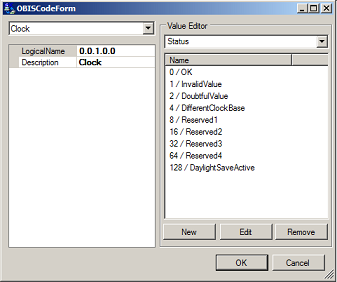

Though it is made possible, it is not recommended to add OBIS codes manually in the GXDLMS/COSEMDirector, but to get them directly from the physical device itself. This is done by adding a device in the Devices Collection, and retrieving the register objects from the physical device, as guided in section Getting started. Once you have retrieved the register objects from the device, you can view their OBIS codes.
The OBIS codes of devices of the supported device manufacturers are automatically available in the OBIS codes dialog.
To view the OBIS codes
In the opening OBIS codes dialog, on the left, you get a list of the supported device manufacturers. A list of OBIS codes of the selected manufacturer is displayed on the right.  |  In the OBIS Code Form you can edit
|
To edit the OBIS codes
- To edit the LogicalName or Description, just replace the text in the text field.
- To edit ValueType, or ValueUIType
- Click on the row to edit,
- open the drop-down list of available options by clicking on the arrow down, in the end of the row, and
- select the required option in the drop down list.
- To change the Interface, select the correct one in the drop-down list (top left in OBIS Code Form).
- To add / edit / remove enumerated values, see section Value Editor below.
- When all required properties of the OBIS code are edited, click OK to save the changes.
Value EditorIn the Value Editor, the top most drop-down list shows the items available to edit. The enumerated device values, and the corresponding UI values, are shown in the list. In the example picture, on the right Status of the Clock register is selected. Below the list are buttons for creating a new, editing and removing a device value / UI value pair. This way you can easily remove the value pairs that your device does not support, from the list, or edit which UI Value is to represent which Device Value. You can also add new value pairs, if they are not all listed. The purpose of using device values and UI values as pairs, is to make interpretation of the read data easier for the user. With value pairs, the user gets information in human language, and does not have to know, or to remember, which device language value means which. An example of using a value pair:
|